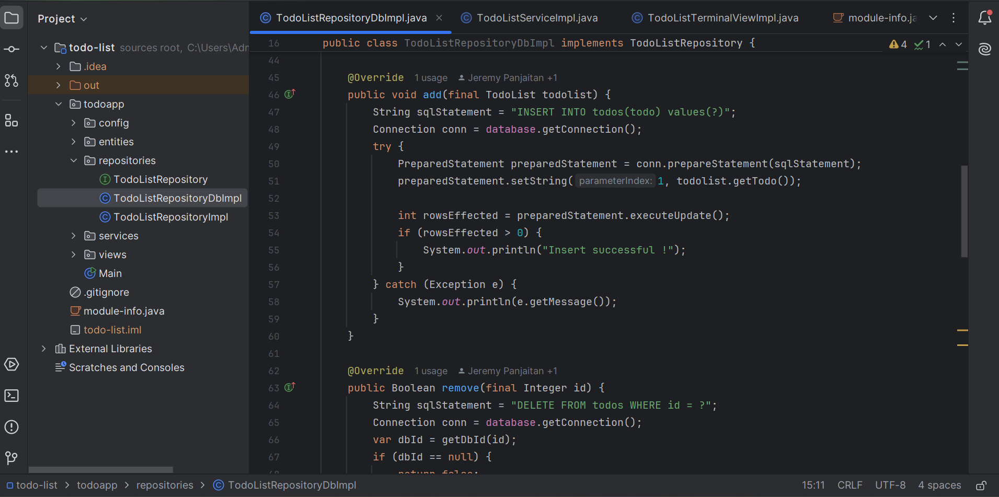
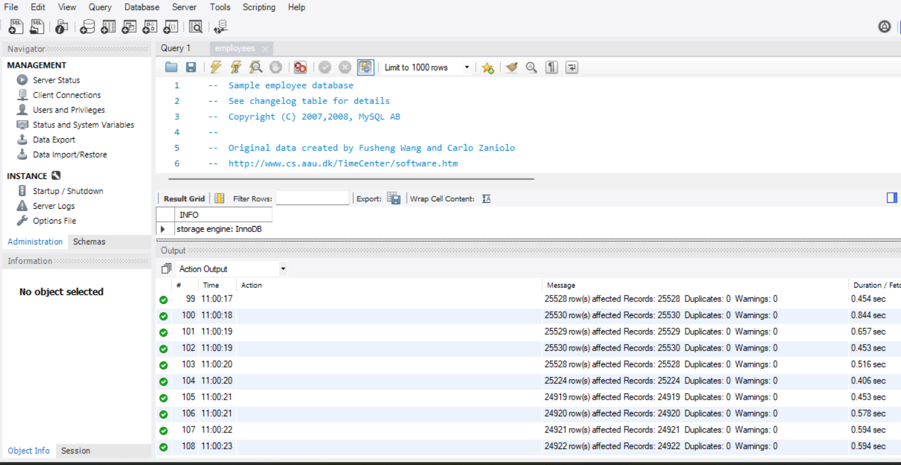
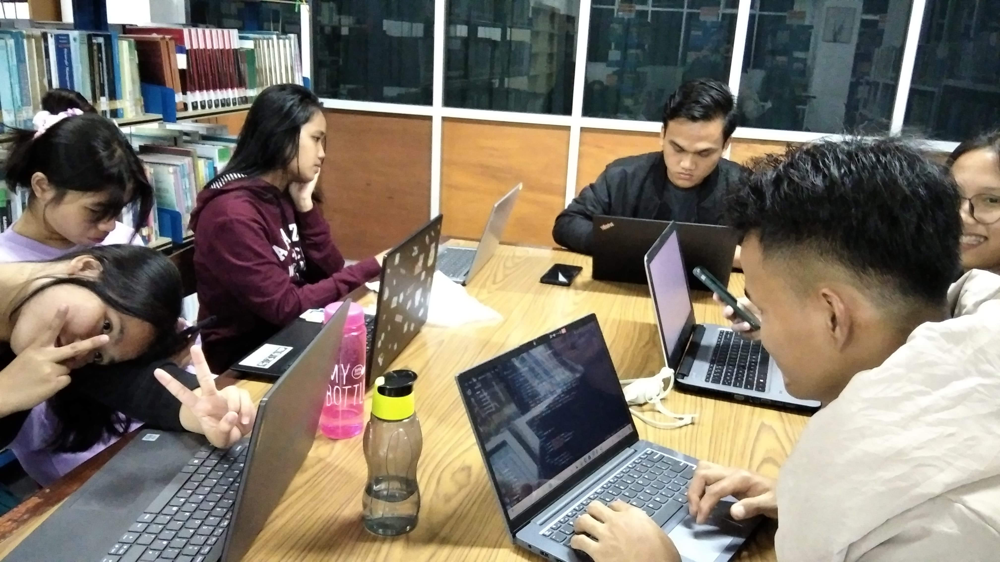

Portofolio
Object-Oriented Programming (OOP)
Is a programming approach that utilizes objects to represent data (attributes) and functions (methods), making it easier to organize and manage code. This paradigm emphasizes concepts such as inheritance, encapsulation, and polymorphism to enhance code reusability and scalability
Database System
It is a system designed to manage, store, and access data in a structured manner using database software. This system enables efficient data management, supports various operations such as searching, updating, and deleting data, and ensures data integrity and security
World Wide Web
The web is a global system that enables users to access, share, and interact with various types of information via the internet. Using technologies like HTML, CSS, and JavaScript.
Cyber Security
Protecting digital systems, networks, and data from cyber threats, ensuring confidentiality, integrity, and availability
Hacker
Is someone skilled in understanding, modifying, and exploiting computer systems or networks. They may act for positive purposes, such as improving security (ethical hacker), or for illegal purposes, such as stealing data or damaging systems.
IT Project Management
Managing resources, time, and budget to execute IT projects efficiently and achieve desired outcomes.
Data Science and Business Intelligence
An IT editor is a professional responsible for managing and editing content related to technology, software, and digital media. They ensure technical accuracy, clarity, and relevance in documents, tutorials, and multimedia content.
Editor IT
An IT editor is a professional responsible for managing and editing content related to technology, software, and digital media. They ensure technical accuracy, clarity, and relevance in documents, tutorials, and multimedia content.
Data Engineer

A professional who designs, builds, and maintains infrastructure and systems to manage and process large-scale data, ensuring optimal accessibility, speed, and data integrity